India's solar energy sector stands at an inflection point. With renewable energy capacity reaching 224 GW out of a total 470 GW installed capacity, the country is racing toward its ambitious 500 GW non-fossil fuel target by 2030. Solar power, once heralded as the silver bullet for energy transition, has delivered remarkable growth—but the grid is now grappling with a paradox that reveals the fundamental limitation of solar-only strategies: abundant midday generation coupled with acute evening deficits.
The Solar Paradox: Generation Without Consumption
The core challenge lies in the nature of solar power itself. Unlike conventional thermal plants that can adjust output to match demand, solar generation is governed by the sun's arc across the sky. On sunny days, solar farms flood the grid with energy precisely when demand is lowest—typically between 10 AM and 4 PM, when commercial activity is moderate and cooling loads are minimal. Then, as evening descends and solar output plummets, electricity demand surges.
India's electricity grid is experiencing this mismatch with intensifying severity. In October 2025, solar curtailment—the wasteful shutdown of renewable generation due to oversupply—reached 12%, with some days seeing up to 40% of generated solar power unable to reach consumers. This represents far more than a technical inefficiency; it translates into lost generation capacity, stranded renewable assets, and, critically, a failure to maximize the country's clean energy potential.
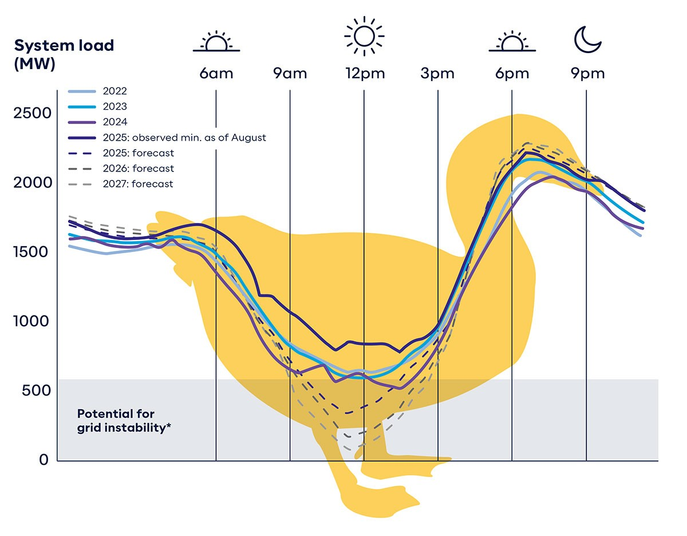
The problem manifests visually as the "duck curve"—a phenomenon where net demand (demand minus variable renewable supply) dips sharply during midday solar peaks, then ramps steeply upward in the evening. By 2025, India had achieved energy sufficiency across daylight hours but faced deepening peak deficits. Regional grid data reveals that during high-solar-penetration hours, severe voltage fluctuations and schedule deviations occur, forcing grid operators to run thermal plants inefficiently or risk blackouts.
This mismatch is not temporary. As peak electricity demand is projected to surge from 250 GW in 2024 to 446 GW by 2030, and renewable capacity accelerates toward 500 GW, the evening ramp problem will intensify. Thermal power plants—designed to run continuously at full load for efficiency—cannot be cycled rapidly enough to fill evening shortfalls without incurring massive operational penalties and emissions.
The Hidden Cost of Untethered Solar: Curtailment and Waste
Behind every curtailment event lies a lost opportunity for decarbonization. India squandered 2–3 TWh (terawatt-hours) of renewable energy due to curtailment in 2022 alone. Expressed differently: this volume of energy could have powered millions of Indian homes for a year with zero emissions.
Currently, India hosts approximately 44 GW of renewable projects struggling to secure electricity buyers. These projects generate power but lack the contractual certainty to operate continuously, a direct consequence of grid operators' inability to absorb and dispatch variable renewable output effectively. When solar capacity outpaces storage and flexible demand, the mathematics are merciless: either generation is curtailed, or grid stability is compromised.
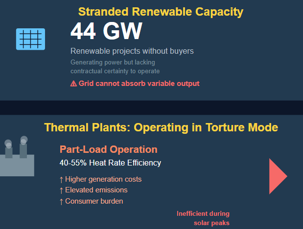
The economic toll extends beyond wasted clean energy. Thermal plants operating in inefficient "part-load" modes during solar peaks—running at 40–55% heat rates—incur higher per-unit generation costs and elevated emissions. Grid operators compensate for this operational torture through complex financial mechanisms, ultimately burdening consumers. Meanwhile, batteries—which could have captured that midday surplus—sit idle in a system not designed to leverage them.
Battery Energy Storage Systems: Completing the Energy Equation
This is where Battery Energy Storage Systems (BESS) transform the landscape from a theoretical constraint into a solved problem. BESS functions as a temporal bridge, capturing excess solar energy when generation outpaces demand, and intelligently releasing it when demand peaks but solar output has vanished.
- Time-Shifting Solar Generation: BESS captures surplus energy generated during peak midday solar hours and stores it in rechargeable batteries. During evening peak demand periods, this stored energy is discharged to the grid. In India's context, this means solar energy that would have been curtailed at noon can now power the 6–9 PM evening demand surge—the very hours when electricity demand spikes and thermal plants struggle to ramp up responsively.
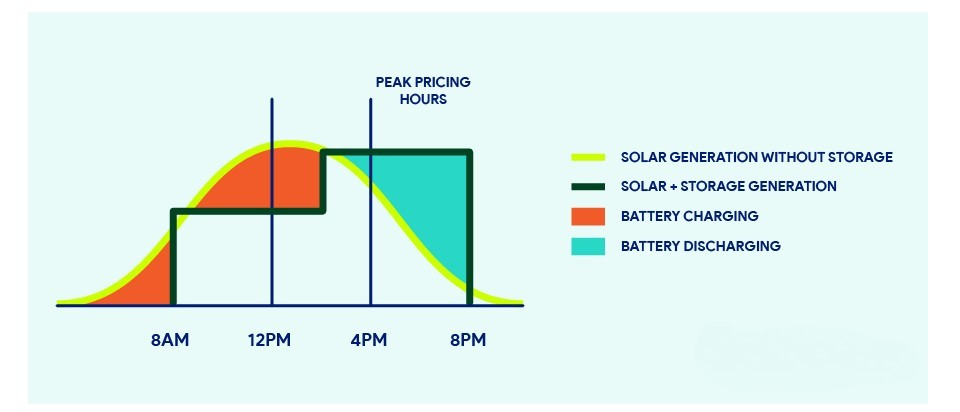
- Frequency and Voltage Stabilization: The grid operates within narrow frequency bands. When demand and supply fluctuate rapidly—as happens during solar cloud transients or evening ramps—thermal plants cannot respond fast enough. BESS systems, by contrast, adjust power output within milliseconds. This rapid-response capability prevents frequency deviations that could cascade into cascading blackouts, a critical service especially as variable renewables become dominant.
- Peak Shaving and Reduced Peaker Dependency: Traditional power systems rely on "peaker plants"—fossil fuel generators started only during peak demand hours, often operating inefficiently and expensively. BESS eliminates or dramatically reduces the need for these plants by providing power during demand peaks, displacing fossil fuel marginal generation and cutting emissions by 40–50 million tonnes annually across India's system.
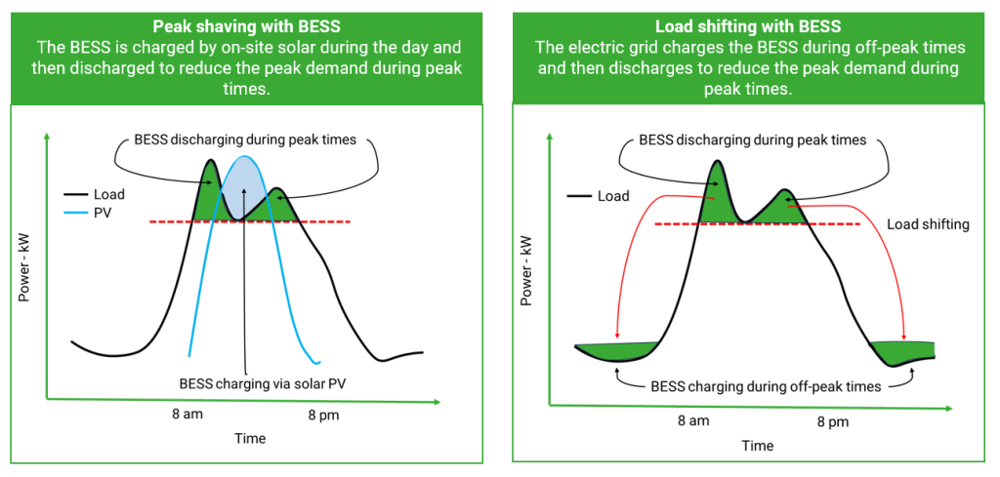
- Energy Arbitrage and Revenue Optimization: BESS enables sophisticated operational strategies. Energy is purchased (or in solar's case, stored) during low-price periods and discharged during peak-price hours. India's emerging energy arbitrage market offers ₹2.5–₹3 per kWh opportunity by 2025, creating positive investment economics for storage projects beyond their grid-service value.
India's BESS Transformation: From Concept to Scale
India's BESS sector is experiencing exponential growth, reflecting both technical progress and policy conviction. The market added 341 MWh of capacity in 2024—a 568% increase from the 51 MWh added in 2023. This acceleration is not random; it reflects explicit government targeting and market mechanisms designed to scale storage rapidly.
Policy Momentum: The Indian government has implemented a comprehensive policy ecosystem:
- Viability Gap Funding (VGF) schemes launched in March 2024 and June 2025 target approximately 43 GWh of BESS capacity with subsidies covering 20–40% of project costs.
- Production-Linked Incentive (PLI) scheme worth ₹18,100 crore supports 50 GWh of advanced chemistry cell manufacturing, with 10 GWh reserved specifically for grid-scale storage.
- Transmission cost waivers for co-located BESS projects until June 2028 reduce per-MWh economics by ₹0.50–₹1.00, substantially improving project viability.
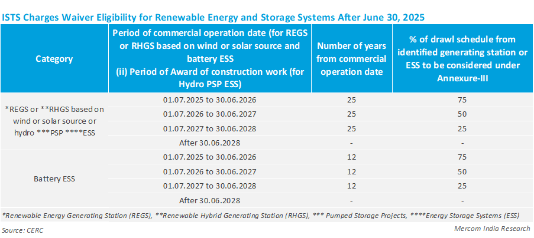
- Energy Storage Obligations are being incorporated into Renewable Purchase Obligations (RPO), mandating that distribution companies procure storage capacity alongside renewable energy—institutionalizing storage demand.
- Technical advisory issued by the Central Electricity Authority in February 2025 recommends at least 10% BESS of solar project capacity with a minimum two-hour duration, effectively embedding storage into every new solar development.
- Market Scale-Up: The financial opportunity is substantial. India's BESS market was valued at approximately USD 7.8 billion in 2024 and is projected to reach USD 32 billion by 2030. Major players including Tata Power Renewable Energy, Adani Energy, AES Corporation (through Fluence), Reliance New Energy, and emerging pure-play storage companies are aggressively deploying capacity.
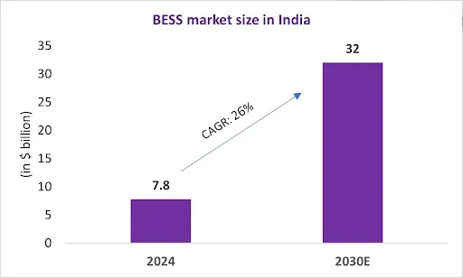
Real-World Success: TATA Power 's Rajnandgaon project in Chhattisgarh—India's largest solar-BESS installation commissioned in March 2024—demonstrates deployment viability. The 100 MW solar facility coupled with 120 MWh of BESS generates 243.53 million units annually while avoiding 4.87 million tonnes of carbon emissions over 25 years. Similarly, Tata Power's Jaisalmer system (100 MW/200 MWh) charges at ₹2.50 per kWh during solar peaks and discharges near ₹7 per kWh during evening peaks, delivering attractive arbitrage returns while solving grid challenges.
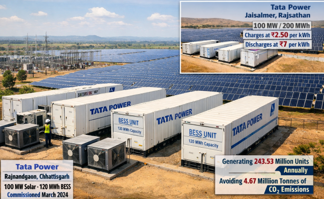
Bridging the Storage Gap: Scale Required vs. Current Trajectory
Despite impressive growth, India faces a mounting storage infrastructure gap. The Central Electricity Authority projects a requirement of 411 GWh by 2031-32 and 1,840 GWh by 2047. As of mid-2025, operational BESS capacity stood at approximately 490 MWh—less than 0.2% of the 2031-32 target.
Closing this gap will require deployment accelerating from current trajectories. The government's combined VGF and additional PSDF (Power System Development Fund) schemes—allocating over ₹91 billion across both tranches—aim to support 43 GWh of capacity, representing significant progress but still requiring additional mechanisms to achieve the multi-hundred-GWh scale necessary by 2030.

The timeline is compressed. With annual solar additions approaching 45 GW, and each GW requiring approximately 4 hours of storage (188 GWh cumulatively for 47 GW of new capacity), the mathematical imperative is stark: India cannot delay storage deployment without risking grid instability, continued curtailment, and failure to realize its clean energy potential.
Emerging Battery Technologies: Expanding Options Beyond Lithium
While lithium-ion batteries currently dominate grid-scale storage, India is advancing complementary chemistries that promise cost reductions and supply chain resilience.
Sodium-ion Batteries: Scientists at Bengaluru's Jawaharlal Nehru Centre for Advanced Scientific Research have developed sodium-ion batteries capable of charging 80% in just six minutes while delivering over 3,000 charge cycles. Beyond speed, sodium-ion systems offer critical advantages for India: sodium is abundantly available domestically (India is the third-largest salt producer globally), whereas lithium is geopolitically constrained and largely imported. Sodium-ion chemistries provide comparable lifecycle performance to lithium-ion with substantially lower costs and enhanced safety—critical for grid applications in high-temperature environments where thermal runaway poses operational risks.
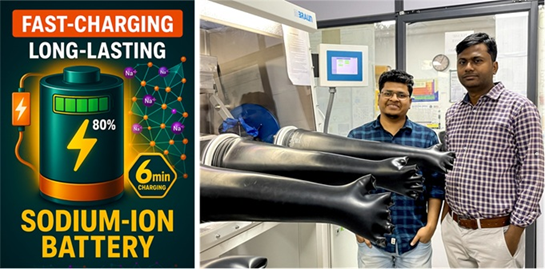
These emerging technologies align with India's Atmanirbhar Bharat (self-reliant India) mission and drive toward critical mineral independence. As manufacturing scales and costs decline over the next decade, sodium-ion systems are projected to capture meaningful market share in daily energy arbitrage and renewable firming applications.
Beyond Technology: The Systemic Imperative
The solar-plus-BESS integrated model represents far more than technological stacking. It embodies a fundamental shift in how grids operate during renewable-dominant futures. When BESS couples with solar, the composite system behaves like a "virtual power plant"—generating power when sun shines, storing surplus capacity, and dispatching energy when consumers need it, independent of time-of-day solar production patterns.
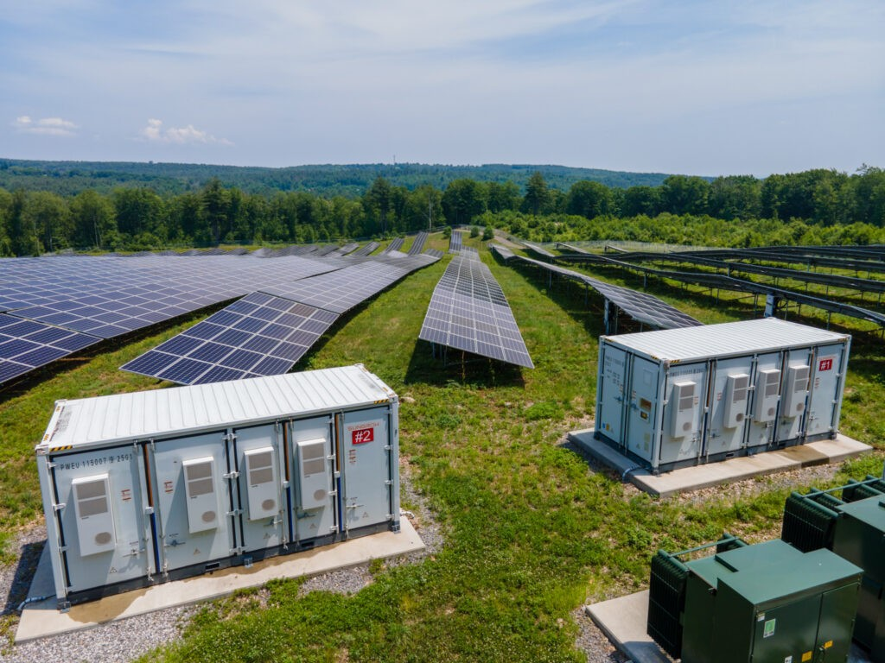
This paradigm change unlocks multiple value streams. Energy self-consumption improves for commercial and industrial consumers, reducing exposure to volatile grid electricity rates. Critical infrastructure facilities—hospitals, emergency services, water treatment plants—gain resilience through on-site solar-BESS systems that maintain operations during grid outages. Communities gain protection against blackouts and demand-surge vulnerabilities. Utilities defer costly transmission and distribution upgrades by managing peak demand closer to generation points through distributed solar-BESS clusters.
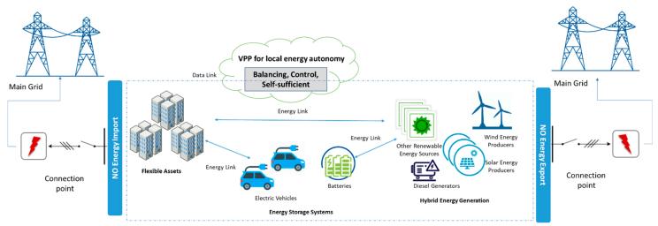
From a carbon accounting perspective, every MWh curtailed represents CO₂ emissions that could have been avoided. Every hour BESS enables thermal displacement represents incremental climate impact reduction. At India's scale, where coal still supplies roughly 40% of electricity, every ton of displaced thermal generation compounds toward national decarbonization targets.
The Path Forward: Why Solar-Plus-BESS Is No Longer Optional
India faces an explicit choice: accelerate BESS deployment commensurate with renewable growth, or tolerate increasing curtailment, grid instability, and system inefficiency. The data unambiguously favors the former.
The duck curve is no longer a theoretical future concern—it exists today in India's grid operations. Regional demand surges create evening shortfalls exceeding 50 GW in summer months. Thermal plants cycle inefficiently to bridge gaps. Renewable projects languish without offtake agreements. These are not projections; they are observable grid realities of December 2025.
Policymakers, project developers, and investors increasingly recognize BESS as infrastructure—not optional add-on. The government's combination of VGF support, PLI manufacturing incentives, transmission cost waivers, storage obligation mandates, and technical standards reflects this conviction. Market participants are responding: BESS tenders exceed 16 GW for 2025, and project pipelines stretch multi-year horizons.
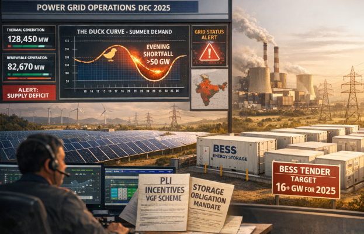
For solar developers, the strategic imperative is clear: solar-plus-BESS projects secure superior offtake terms, command premium pricing in competitive auctions, and access targeted government subsidies unavailable to solar-only installations. For utilities and distribution companies, BESS participation in ancillary service markets, peak shaving operations, and renewable firming creates new revenue streams while improving system reliability. For consumers, rooftop solar coupled with residential BESS maximizes energy independence and minimizes grid dependency.
Conclusion: The Complete Energy Solution
Solar energy remains central to India's clean energy transition—its abundant resource potential, rapid cost declines, and scalable deployment make it foundational. But solar's intermittency is not a constraint to manage around; it is a design specification to engineer into solutions. BESS is that engineered response.
The question is no longer whether BESS is necessary—Indian grids are already experiencing that necessity acutely. The question now is simply: how fast can India deploy it? And the answer, increasingly supported by policy, capital, and technology, is faster than ever before. Solar alone will not complete India's energy transition. Solar plus BESS will.